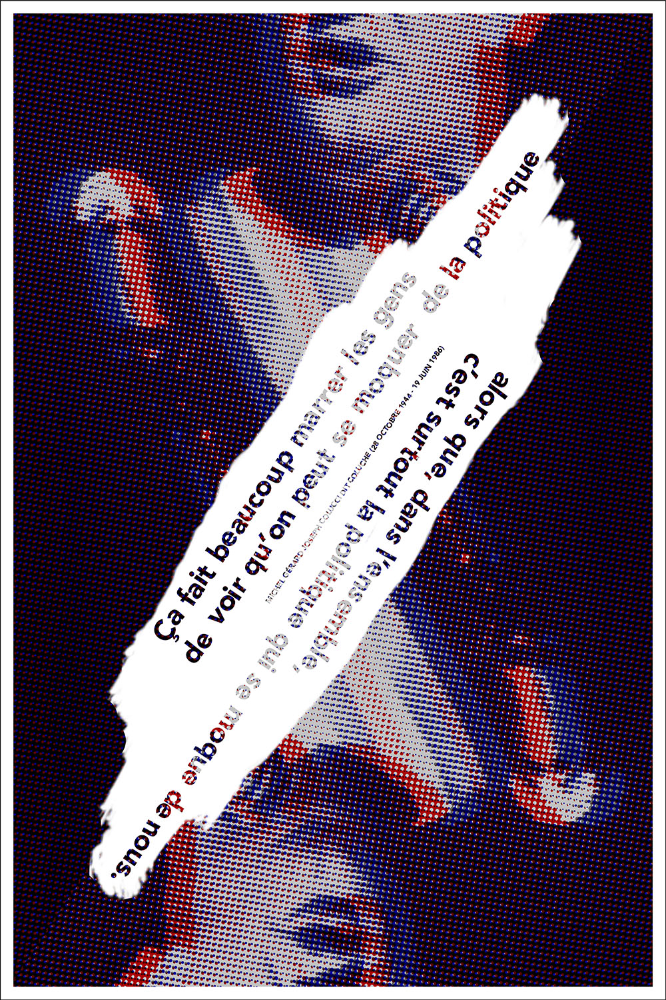

Coluche
Coluche, mort il y a un peu plus de 30 ans, a marqué par sa façon d’être, par ses phrases percutantes et anti-conformistes. Prévue pour s’exposer au milieu d’une trentaine d’autres, cette affiche propose un hommage fondé sur une de ces phrases, et mettant en avant le double-jeu politique, finalement toujours d’actualité.
//
Coluche is a french humorist, dead 30 years ago. He was really famous, and leaves his mark on the mind of french people, with his powerful and nonconformist ideas.
Made to be exhibited with thirty or so other ones, this poster pays tribute to him, by using one of his sentences about political double game that is still actual everywhere.
